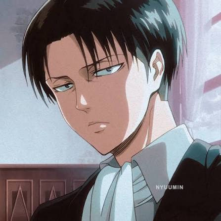

| Height: | 160 cm |
| Age: | Early 30s |
| Affiliation: | Scout Regiment (Squad Leader) |
Levi Ackerman, often referred to as Captain Levi, is the leader of the Special Operations Squad. Despite his short stature, his unparalleled speed, agility, and tactical intelligence earned him the title of "Humanity's Strongest Soldier."